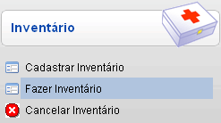
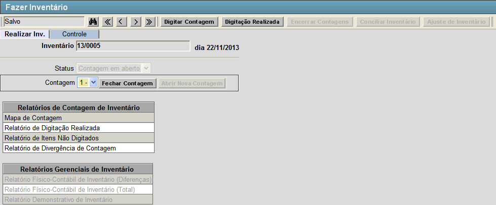
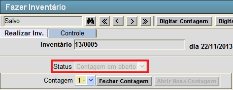
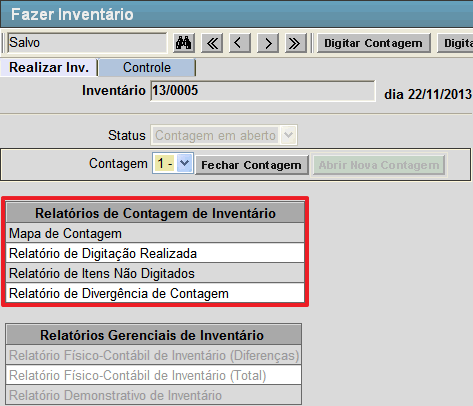
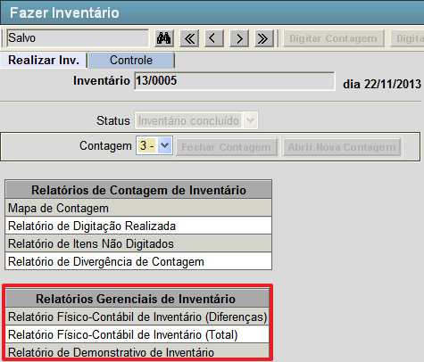
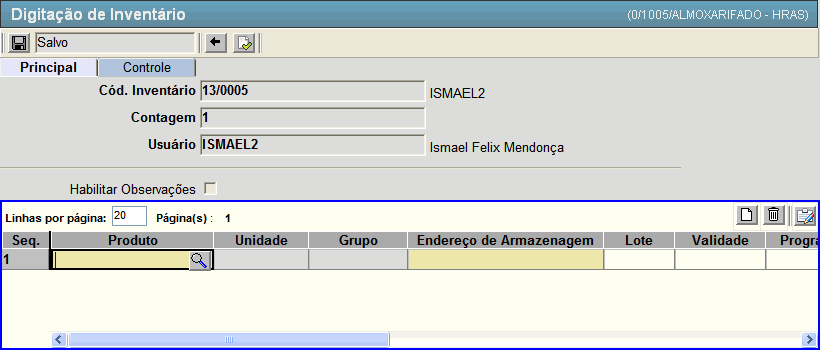

Fazer Inventário [ Voltar ]Utilize este formulário para realizar as contagens e conciliação de inventário.Para acessá-lo, vá ao menu "Estoque - Inventário" na tela inicial e clique em "Fazer Inventário". 
Após clicar no formulário, o sistema abrirá a seguinte tela: 
Esta tela já vem carregada com o inventário que está aberto para contagem, tendo em vista que só é permitido haver um por vez. Siga os passos abaixo para fazer um inventário. 1º Passo: as seguintes opções devem ser levadas em consideração.
Este status indica que o registro de inventário foi cadastrado, porém ainda não foi processado. Neste caso, o inventário ainda não pode ser realizado;
Este
status indica que o inventário possui uma contagem em aberto (o campo Contagem exibe o número da contagem correspondente). Neste caso, para
iniciar a contagem clique no botão  [Digitar Contagem]; [Digitar Contagem];
Indica que a contagem anterior foi encerrada (o campo Contagem exibe o número da contagem correspondente). Você pode decidir abrir nova contagem por meio do botão  [Abrir Nova Contagem] ou encerrar as contagens com o botão [Abrir Nova Contagem] ou encerrar as contagens com o botão  [Encerrar Contagens]; [Encerrar Contagens];
Neste
estágio do inventário, todas as contagens foram realizadas. É possível
visualizar os relatórios de contagem, conciliar o inventário e efetuar
ajustes.
Status que indica que o inventário em questão já foi conciliado e está encerrado. 

 2° Passo: uma vez aberta a contagem, clique em [Digitar Contagem] para inserir os resultados da mesma. Você será redirecionado para a tela abaixo: 3° Passo: preencha a grade da tela com os dados da contagem e dos produtos. Lembre-se que os campos amarelos são obrigatórios. Os campos disponíveis são:
Para adicionar novos produtos a grade tecle "Enter" ou clique no botão  [Novo] que uma nova linha será adicionada. [Novo] que uma nova linha será adicionada.4° Passo: após inserir todos os dados da contagem, clique no botão  [Salvar] para salvá-los. Em seguida, clique no botão [Confirmar] para afirmar os dados inseridos e depois no botão [Salvar] para salvá-los. Em seguida, clique no botão [Confirmar] para afirmar os dados inseridos e depois no botão  [Voltar] para retornar à tela principal. [Voltar] para retornar à tela principal.5° Passo: para concluir a contagem atual, clique no botão  [Fechar Contagem]. Assim que a contagem é fechada, o botão [Abrir
Nova Contagem] é habilitado para a criação de uma nova contagem. Se
desejar concluir o processo de contagens, clique no botão [Encerrar Contagens]. [Fechar Contagem]. Assim que a contagem é fechada, o botão [Abrir
Nova Contagem] é habilitado para a criação de uma nova contagem. Se
desejar concluir o processo de contagens, clique no botão [Encerrar Contagens].Observação: a qualquer momento o usuário pode ter acesso aos relatórios de digitação de inventário, descritos no 1° passo. 6º Passo (Opcional): após confirmar a contagem clique no botão [Digitação Realizada] para revisar e ajustar os valores da contagem. Nesta tela é listado todos os produtos da contagem e os produtos que deveriam estar contados de acordo com o estoque do sistema. Nela é permitida a edição das quantidades de cada item. 7° Passo: após encerrar as contagens clique no botão [Ajuste de Inventário] para verificar se algum produto no estoque necessita de ajuste. Nesta tela são listados todos os produtos, a quantidade contada, a diferença entre as contagens e o estoque e o ajuste necessário no estoque. Faça as alterações necessárias e clique no botão [Salvar].8° Passo: depois de realizar o ajuste necessário no inventário clique no botão  [Conciliar Inventário] para atualizar os saldos dos produtos do estoque a partir do inventário.
Assim que o inventário é conciliado, os relatórios gerenciais de
inventário (descritos no 1° passo) são habilitados para o usuário. [Conciliar Inventário] para atualizar os saldos dos produtos do estoque a partir do inventário.
Assim que o inventário é conciliado, os relatórios gerenciais de
inventário (descritos no 1° passo) são habilitados para o usuário. |
 [Pesquisar] para selecioná-lo por meio de uma listagem contendo todos os produtos cadastrados disponíveis.
[Pesquisar] para selecioná-lo por meio de uma listagem contendo todos os produtos cadastrados disponíveis.